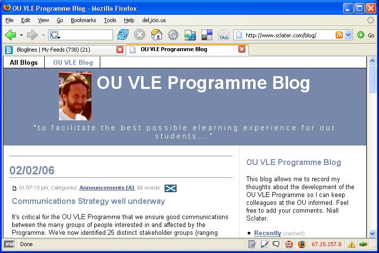

Several months on from the OU's stated intention to adopt Moodle for the OU VLE, VLE programme director Niall Sclater has been doing the rounds of the OU in the last week or two giving staff an overview of what we can expect: OU readers can check out a Berrill Stadium presentation recording on the VLE or check out the VLE programme intranet site.
One of the things that was mentioned was that student blogs and wikis would be among the first things to be released, around about May of this year (hmm - that's interesting - the Moodle roadmap has blogs down as a late Feb. beta - good to know that OUr students will be getting a proven blogging system then...)
There are issues of course regarding the propriety of student contributed content in public web pages hosted on the .open.ac.uk, as well as any unsavoury trackbacks or comments that may get posted (this blog, for example, was shut down by the .open.ac.uk domain admin when I got some porn-related comment spam last year)... so I guess public comments and trackbacks will be disabled (as I've had to do on this blog) unless the blogging engine takes precautions...I'm not sure who'll be moderating the blogs though (all OU online conferences are moderated by somebody, and I think that all of them are private in the sense that only people who've logged in have access to them).
Blogs for staff will apparently come a little bit after blogs for students (that's okay then...). The meantime/current solution is to use the AACS blogs, or this student blogging system. I get the impression that the desire is for the VLE blogging system to become the norm for staff eventually, so I don't know if this means that the AACS system will be forcibly shut down, or whether it will be allowed to continue in a mixed blogging economy.
I assume too that Moodle will be centralising the blogging service, rather than loosely coupling to a proven, pre-existing blogging system - perhaps there's someone out there with more knowledge of Moodle development who can let me know (by email, if poss - there's a link on te sidebar on the main page of this blog) what the proposed blogging solution is for Moodle?
Anyway - the intention not to support OU internal blogging solutions that already exist seems pretty blatant:

Here's the link: OU VLE Programme Blog (external site!)...;-)
Posted by ajh59 at February 12, 2006 10:34 PM